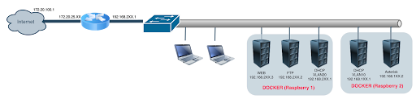

Le projet consiste à concevoir et mettre en place une infrastructure réseau multi-services pour une petite entreprise, avec une solution de téléphonie IP (VoIP), une segmentation réseau par VLAN, et des services internes hébergés sur des serveurs Raspberry Pi sous Docker. L’objectif est d’obtenir un réseau structuré, plus sécurisé et plus facile à administrer.
Le réseau attendu repose sur un VLAN DATA pour les postes clients et un VLAN VOICE pour la téléphonie. Les postes doivent obtenir automatiquement leur configuration réseau via DHCP, et les téléphones IP doivent pouvoir enregistrer leurs extensions sur le serveur VoIP. Le projet doit également démontrer la mise en service des services internes et la bonne séparation logique du trafic.
Pour cette partie, nous avons choisi : Catalyst 2950 comme switch manageable, et 2 Raspberry Pi, voice-dhcp et web-dhcp pour héberger les services. Le système d’exploitation retenu est Debian 13 (trixie).
La segmentation réseau a été réalisée avec PacketTracer, ce qui permet de séparer le trafic des postes utilisateurs et celui de la téléphonie. Le service VoIP repose sur Asterisk.
Les services internes sont fournis par Apache pour le web, vsftpd pour le FTP, et ISC DHCP pour l’attribution automatique des adresses IP. Le déploiement est automatisé grâce à Docker.
L’architecture a été mise en place selon le schéma suivant :

Le switch manageable permet d’isoler les différents flux réseau.Sur le premier Raspberry Pi, nous avons installé httpd, delfer/alpine-ftp-server et networkboot/dhcpd. Sur le second Raspberry Pi, nous avons déployé andrius/asterisk et networkboot/dhcpd. Chaque service a été configuré avec une adresse IP fixe et des paramètres adaptés à son rôle.
La partie VoIP a consisté à configurer Asterisk, à créer les extensions 6001, 6002 et 6003, puis à effectuer des tests d’appel entre les différents postes. Les configurations réseau, les règles de sécurité et les services Docker ont été vérifiés étape par étape afin de valider le bon fonctionnement global.
Les tests ont porté sur l’obtention d’une adresse IP via DHCP, l’accès au serveur web, la connexion FTP, la communication entre VLAN et les appels téléphoniques IP. Les résultats ont montré que tout était fonctionnel.
Ce projet nous a permis de mettre en pratique des notions importantes en réseau, administration système et téléphonie IP. Nous avons pu configurer un réseau segmenté, déployer des services internes et mettre en place une solution VoIP fonctionnelle.
Les principales difficultés rencontrées ont été la découverte pas à pas de Docker et Asterisk ainsi que la gestion d'erreurs relatives au DHCP et à la téléphonie IP. Pour les résoudre, nous avons fait beaucoup de recherches et de tests réels pour s'adapter et analyser le fonctionnement de ces outils.
En amélioration future, nous pourrions ajouter Un troisième Raspberry Pi représentant un serveur de backup ou un service infra, renforcer la sécurité avec SSH sur le web, ou encore automatiser davantage le déploiement avec des images Docker personnalisées.